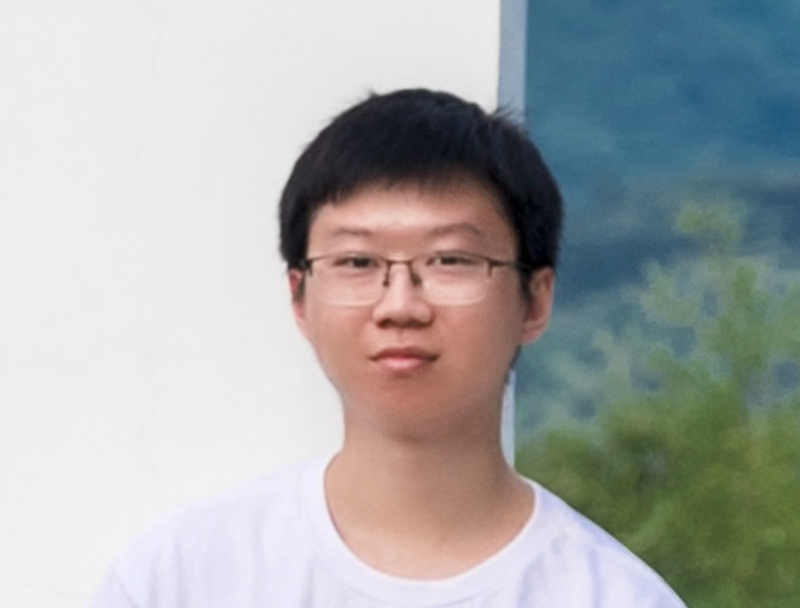

I am a Computer Science Ph.D. student at the Georgia Institute of Technology, where I work in the High Performance Architecture (HPArch) Lab advised by Prof. Hyesoon Kim. Prior to starting my Ph.D., I completed my M.S. (2026) and B.S. (2024) in Computer Science at Georgia Tech.
My research focuses on GPU architecture, GPU and ML compilers, GPU binary lifting and analysis, and hardware/software co-design—particularly understanding how GPU kernels execute at the instruction level and retargeting GPU workloads across architectures.
* Indicates co-first authorship.
Binary translator that lifts NVIDIA GPU binaries (SASS) to typed LLVM IR through a multi-stage pipeline that reconstructs SIMT control flow, restores register types, and normalizes architecture-specific instruction patterns.
Open-source compiler toolchain extensions for compiling CUDA programs to CPU and RISC-V GPU (Vortex) targets, including support for cooperative groups, warp-level primitives, and atomic operations.
Profile-guided LLM agent workflow that reconstructs and migrates closed-source robotics GPU workloads to the Vortex RISC-V GPU, building a robotics kernel benchmark suite for GPU architecture research.
Implemented sparse matrix storage formats and CUDA SpMV kernels, evaluating performance characteristics across SuiteSparse workloads under Prof. Zhiru Zhang.